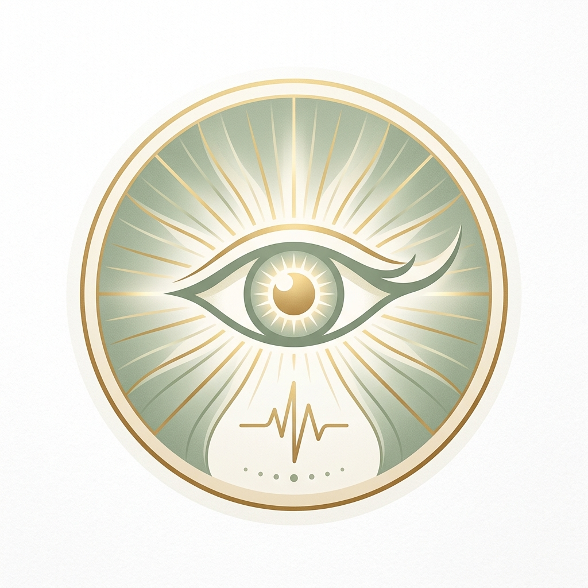
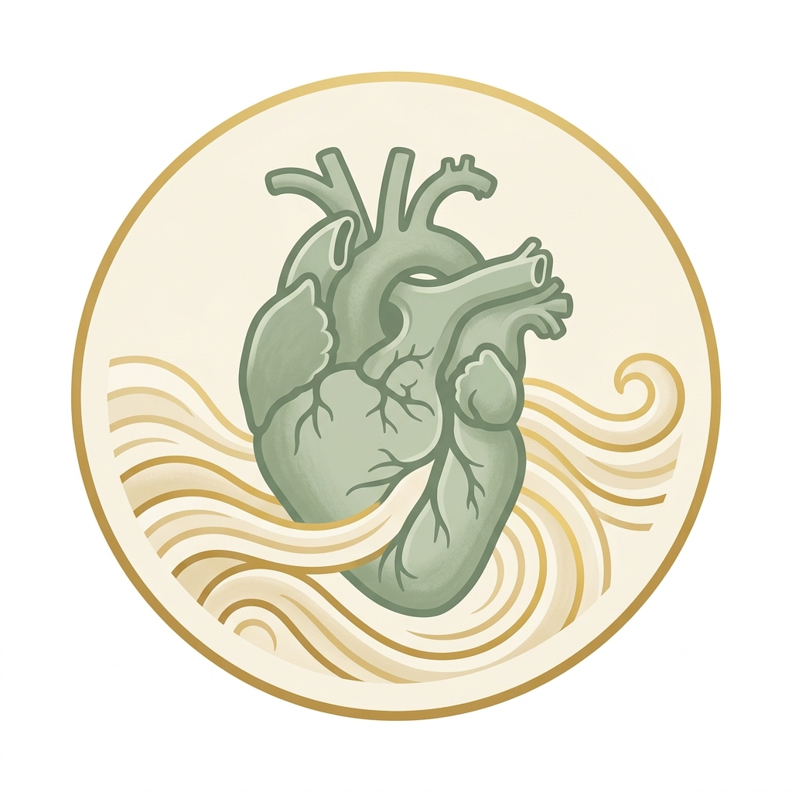
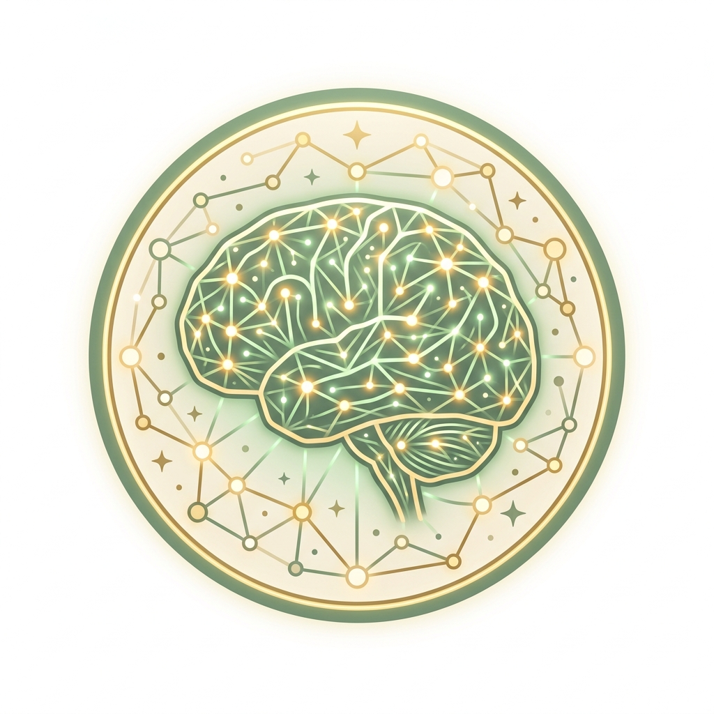
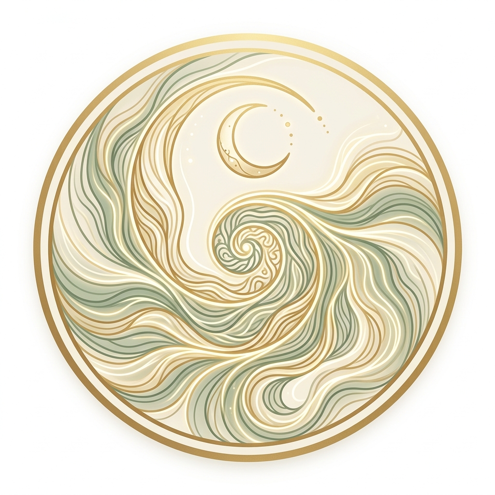
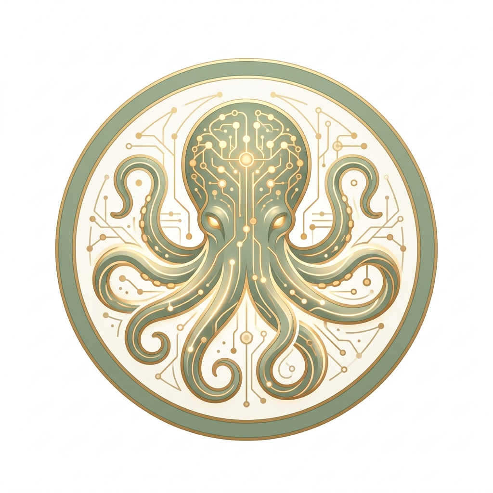
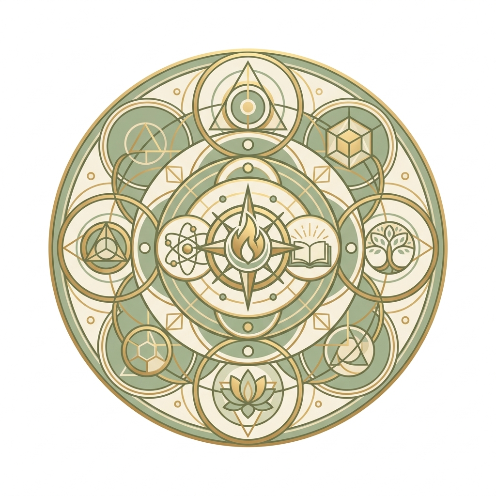

Consciousness Retreat 2027
A residential week of sustained cognitive bandwidth, neurophenomenology, and quiet contemplation exploring the fundamental question of subjective experience.
The Seven Circles of Inquiry
Each day is centered upon a core thematic circle, advancing from phenomenological origins to embodied selfhood, global brain models, altered states, and synthetic minds.






The 7-Day Program
A continuous hourly rhythm balancing morning yoga, rigorous keynotes, hands-on labs, silent afternoon reading, and evening fireside salons.
Gentle somatic stretching, breath awareness, and seated silence in the open-air pavilion overlooking the valley.
Fresh local fruits, Kerala breakfast, and quiet orientation time across the retreat grounds.
Welcome and orientation by the organizing collective. Articulating the core inquiry questions and methodological ground rules for the week.
Herbal infusions, coffee, and informal courtyard conversations.
Dr. Kabir Anand leads an examination of structural isomorphisms between first-person reports and continuous neuroimaging measures.
Nutritious farm-to-table lunch followed by unhurried walks along the nature trails.
Uninterrupted personal reading in the retreat library or gardens focusing on Day 1 foundational papers.
Cardamom tea, light snacks, and relaxed dialogue on the veranda.
Hands-on partner practicum training in elicitation interview techniques to capture momentary cognitive experiences.
Sunset views over the Silent Valley canopy, journaling, or spontaneous courtyard discussions.
Shared evening meal followed by informal fireside discussion on the meta-problem of consciousness.
Interoceptive body-scan yoga focusing on breath, heartbeat awareness, and visceral mindfulness.
Breakfast overlooking the misty valley.
Dr. Maya Bose presents experimental findings on heartbeat-evoked potentials (HEP) and gastric rhythms grounding subjective perspective.
Herbal teas and informal conversation on the lawn.
Real-time physiological experiments evaluating body ownership manipulation and heartbeat tracking tasks.
Fresh regional lunch and silent sensory walks through the teak forest.
Dedicated reading hour focusing on embodied cognition and autonomic neural signaling.
Ginger tea and garden discussions.
Dialogue on how affective valence transforms raw physiological regulation into subjective feelings of pleasure and pain.
Leisure time before dinner.
Open evening salon: "Does consciousness require a living biological body?"
Mindful vinyasa and attentional stabilization meditation.
Nutritious breakfast and quiet time.
Prof. Vijay Salgaonkar presents the predictive processing paradigm: how top-down generative models construct waking reality.
Refreshments and discussion.
Simulating hierarchical prediction error propagation using interactive computational notebooks.
Wholesome lunch and relaxation.
Individual reading time in the sanctuary library exploring adversarial collaboration papers and global workspace models.
Tea and refreshments.
Prof. Georgekutty V. examines MEG, fMRI, and iEEG findings from the Cogitate adversarial collaboration.
Relaxation across the retreat sanctuary.
Evening discussion on the methodological future of adversarial collaborations in neuroscience.
Pranayama and dream-recall reflection practice in the morning light.
Breakfast and quiet reflection.
Dr. Geeta Rathore breaks down the neurodynamics of psychedelic states, cortical hierarchy flattening, and entropy increase.
Herbal teas and courtyard catch-ups.
Interactive demonstration measuring Lempel-Ziv complexity and sample entropy across altered vs. normal baseline states.
Lunch and sensory recharge in the sanctuary.
Quiet study time focusing on neural entropy, pharmacological papers, and dream neurobiology.
Fresh chai and veranda discussions.
Two-way real-time communication during REM sleep and the phenomenology of hypnagogic dream formation.
Personal time and contemplation.
Open salon: "Are psychedelic epiphanies epistemic insights or neural artifacts?"
Pure stillness meditation: settling the mind into objectless open awareness.
Silent breakfast fostering internal awareness.
Dr. Kabir Anand maps content-free awareness, tonic alertness, and cessation dynamics in advanced contemplative adepts.
Herbal teas and quiet discussions.
Structured introspective exercises distinguishing the sense of phenomenal presence from narrative self-talk.
Wholesome midday meal and walking meditation along the stream.
Personal reading hour examining contemplative maps and minimal phenomenal selfhood literature.
Tea and refreshments.
Comparing default mode down-regulation in advanced meditators versus 5-MeO-DMT induced ego dissolution.
Unstructured contemplative time.
Evening circle: "Is non-dual awareness the ground state of biological consciousness?"
Morning yoga focusing on somatic presence and open awareness.
Breakfast in the dining hall.
Dr. Siddharth Sen (John Doe) examines substrate independence, recurrent architectures, and tests for phenomenal consciousness in LLMs.
Tea and courtyard discussion.
Cross-disciplinary panel evaluating cephalopod cognition, cortical organoids, and multi-agent AI networks.
Midday meal and nature walks.
Reading time focusing on dimensions of animal consciousness and philosophy of AI sentience.
Tea and refreshments on the veranda.
Assessing sensory richness, temporal unity, and evaluative valence across octopuses, corvids, and human infants.
Relaxation across the grounds.
Evening salon on the moral status and ethics of synthetic consciousness.
Final morning yoga and gratitude meditation overlooking the valley.
Breakfast and morning fellowship.
Prof. Georgekutty V. outlines emerging clinical frontiers: real-time perturbational complexity monitoring, brain organoid ethics, and neural prosthetics.
Tea and project discussions.
Assembling joint grant proposals, adversarial pre-registrations, and open datasets seeded during the retreat dialogues.
Celebratory midday lunch.
Final solitary reflection hour across the grounds to synthesize personal takeaways and reading notes.
Refreshments before the final circle.
Harvesting individual and collective realizations. Final reflections on how the inquiry into consciousness continues beyond the retreat into scientific craft.
Festive dinner and traditional instrumental music under the stars.
Speakers
Six leading researchers spanning computational neuroscience, philosophy of mind, neuropharmacology, visceral biology, and clinical coma recovery.
Prof. Vijay Salgaonkar, PhD
Center for Computational Cognitive Science, Goa
Dr. Maya Bose, MD, PhD
Laboratory of Visceral Neuroscience, Kolkata
Dr. Kabir Anand, PhD
Department of Philosophy & Contemplative Studies, Delhi
Dr. Geeta Rathore, PhD
Center for Psychedelic Science, Mumbai
Prof. Georgekutty V., MD, PhD
Institute of Brain Recovery, Kochi
Dr. Siddharth Sen (John Doe), PhD
Center for Artificial Sentience, Bengaluru
Reading Time
Fourteen papers. Two per day. Consider them your entry ticket. Participants are expected to have wrestled with these before arriving — the conversations run a lot deeper when everyone's already argued with the authors in their head.
Consciousness science: where are we, where are we going, and what if we get there?
A comprehensive multidisciplinary roadmap synthesizing the current empirical state of consciousness research, identifying major roadblocks, and charting the next horizon of experimental frameworks.
The Hitchhiker’s Guide to Neurophenomenology – Studying Self Boundaries With Meditators
Practical methodological guide implementing Varela’s neurophenomenological paradigm. Demonstrates how to calibrate subjective self-boundary dissolution with millisecond-resolution electrophysiological dynamics.
The Neural Bases of Interoception and the Bodily Sense of Self
Explores how continuous ascending visceral signals from the heart, gut, and lungs are integrated into the insula and default network to generate subjective first-person perspective.
What Is It Like to Be a Bat?
The foundational paper establishing that an organism has conscious mental states if and only if there is something that it is like to be that organism for the organism itself.
Theories of consciousness
Critical taxonomy and comparative assessment of the four primary theoretical frameworks in modern neuroscience: Higher-Order Theories, Global Workspace, Integrated Information, and Predictive Processing.
An adversarial collaboration to critically evaluate GNW and IIT
Pre-registered adversarial experiment across 6 international laboratories testing empirical divergences between Integrated Information Theory and Global Neuronal Workspace.
Psychedelics and the Entropic Brain: Revisited
Updated theoretical framework detailing how 5-HT2A receptor agonism elevates functional brain entropy, flattens cortical energy landscapes, and dismantles modular segregation.
REBUS and the Anarchic Brain: Toward a Unified Model of Brain Action
The seminal formulation of the Relaxed Beliefs Under Psychedelics (REBUS) model unifying free-energy principles with psychedelic neurodynamics.
Minimal Phenomenal Experience: Meditation, Tonic Alertness, and Pure Awareness
Rigorous investigation into contentless conscious states, characterizing pure awareness as an introspectively accessible state of tonic alertness without intentional objects.
Toward a Unified Model of Advanced Meditation, Human Development, and Meditation Maps
A cross-traditional synthesis mapping stages of advanced contemplative practice, non-dual states, cessation phenomena (nirodha), and their trajectories in contemporary cognitive science.
Dimensions of Animal Consciousness
Proposes a multidimensional framework for animal sentience across perceptual richness, evaluative affect, integration across time, and selfhood.
Could a Large Language Model Be Conscious?
Systematic evaluation of current generative AI models against criteria derived from neuroscience theories (recurrence, global workspace, embodied action) to assess potential sentience.
Are There Islands of Awareness?
Examines conditions where conscious awareness might persist in total isolation from external sensory inputs and motor outputs—in coma, brain organoids, and hemispherectomy.
Consciousness in the cradle: on the emergence of infant experience
Synthesizes neurodevelopmental markers, attention networks, and behavioral indicators to determine when conscious subjective experience first emerges during human infancy.